< Home < Cranes
One of my hobbies is folding origami cranes. There's an old legend from Japan that anyone who folds 1,000 origami cranes will be granted a wish. More recently, it became popular in the 1950s when a Japanese girl with leukemia caused by the atomic bombing of Hiroshima was inspired by the legend. She folded about 1,400 before passing away, as told in retellings in the fictional book Sadako and the Thousand Paper Cranes, the nonfictional book The Complete Story of Sadako Sasaki, and various museums and memorials around Japan).
My parents visited Japan over the spring of 2024 and I asked for them to bring back a crane-folding kit so I could attempt this goal. I folded my first crane in June and am currently up to 105! Each crane takes between 10 and 15 minutes to fold, which means it will take approximately 186 more hours until I reach 1,000... Here are pictures of my cranes!
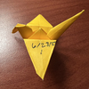
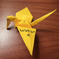
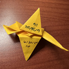
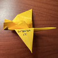
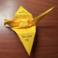
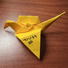
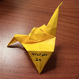
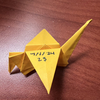
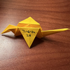
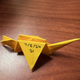
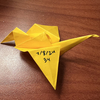
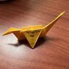
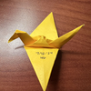
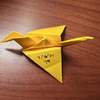
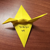
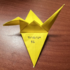
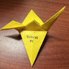
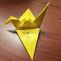
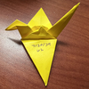

 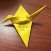
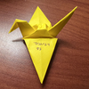
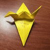
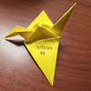
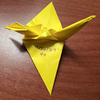
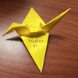
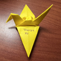
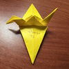
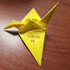
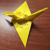


 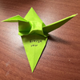
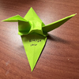